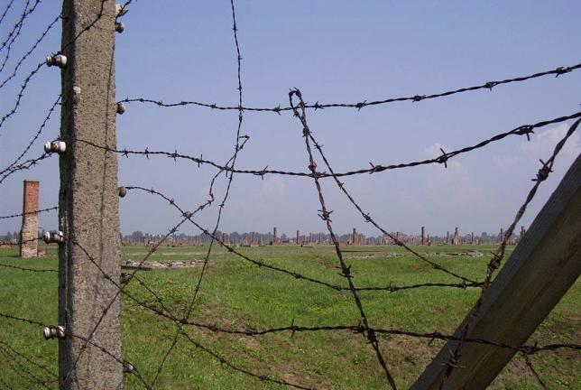
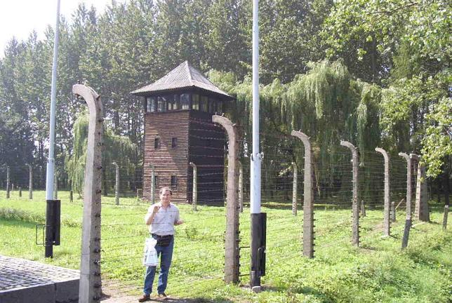
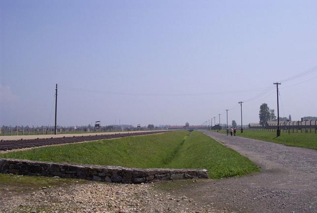
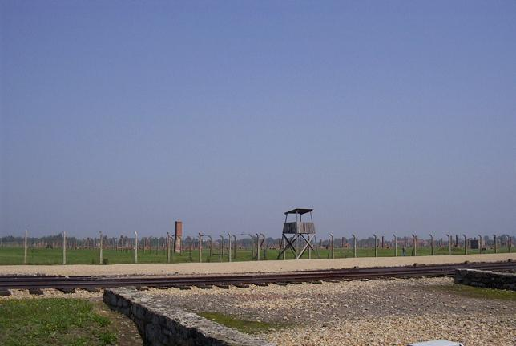

Most of the wooden barracks are no longer there, but one can see many of the single chimneys that used to be located at one end of the barracks – chimneys that of course were totally inadequate to heat up the buildings in wintertime. Most of the electrified fences are still up and were being repaired when we visited, with the original, rusted barbed wire still strung up.




Back to Birkenau
Back to the trip homepage